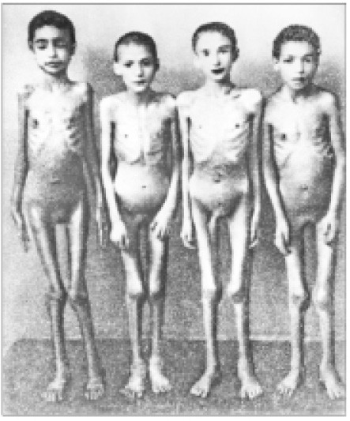

在目睹门格尔和其他纳粹医生们的暴行之后，国际社会纷纷呼吁“不让惨剧重演”。纳粹的所作所为（正如他们中的一些人在战后审判中所言）实际上根植于长期存在、可耻而又根深蒂固的滥用医学研究的传统。早在1840年代，J.玛丽昂·西姆斯就在未实施麻醉的女性奴隶身上反复试验手术；而到了20世纪上半叶，利奥·斯坦利则将猪、山羊和绵羊的睾丸植入囚犯的体内；在科学的幌子下，遍及许多国家、不计其数的患者被蓄意传染致命或致残的疾病。
作为对奥斯威辛、布痕瓦尔德以及其他集中营所暴露真相的直接回应，《纽伦堡法典》（1947）宣示了一切研究必须以参与者的同意为前提，而《日内瓦宣言》（1948）则规定了医生对患者负有医学伦理上的义务。
《纽伦堡法典》后来被世界医学会的《赫尔辛基宣言》（1964）取代。《赫尔辛基宣言》先后作了六次修订，最新的是2008年版。《赫尔辛基宣言》本身并无法律上的约束力，却深刻地影响了世界各国和国际上关于医学研究的伦理规范和法律规范。如我们所看到的，具有权威性的医学伦理守则可以透过某些机制成为实践中或是事实上的医事法。大多数国家都认可《赫尔辛基宣言》或它的某个版本。所以，要了解国际上的法律共识，研读《赫尔辛基宣言》是最好的途径。
为扭转二战结束前的医学研究中那种不顾他人的功利主义倾向和彻头彻尾的非人道思潮，《赫尔辛基宣言》发挥了重要的作用。但这还不够。类似门格尔的医学滥权仍在继续。在美国亚拉巴马州的塔斯基吉，1932至1972年间，梅毒患者被告知正接受针对性的治疗。他们原本有机会接受真正的治疗，但实际上并没有接受。很多患者因病去世，不少儿童则由于垂直传染而罹患先天性梅毒。在纽约市的斯塔顿岛，直到1966年为止，患有精神障碍的儿童被秘密地传染肝炎病毒。而在美国得克萨斯州的圣安东尼奥，直到1971年为止，接受节育治疗的妇女在未经同意的情况下服用安慰剂，而非有效的避孕药物，很多妇女因此怀孕。在1960至1971年间，美国国防部和国防原子武器发展局资助了在未经患者同意的情况下实施的全身放射试验。1994年，一项研究发现名为“齐多夫定”的药物对减少艾滋病毒母婴传播非常有效。在后续的临床试验中，为了确保美国的患者可以获得药物，第三世界国家患者的药物被克扣。类似的悲剧一再重演。
现行的《赫尔辛基宣言》凸显了患者的自主和“告知后同意”的重要性，强调患者的利益重于社会福祉或科技进步。
《赫尔辛基宣言》的出发点是好的。它是一项诚实的努力，试图在保障人类个体权利的同时，承认科技进步的重要性，承认社群主义的视角有时是有道理的。但既然有如此雄心，便很难追求哲学意义的自洽，《赫尔辛基宣言》就不够自洽。它像是百衲被，并不是由体现同一原则的纱线毫无缝隙地编织而成的。当然，这本身并不意味着对它的否定。某些制定良好的法律也混杂着好几种哲学。
但既然《赫尔辛基宣言》针对患者自主给出了明确的口惠，值得一说的是，它却在第21条规定仅当研究目标的重要性高于研究受试者承担的风险时，人体研究方可进行。这一条规定体现的是家长作风式的限制。假如制药公司支付一大笔钱让我参与新品牌洗发水的潜在危险研究，为什么不能这么做？我的身体不属于我自己吗（我参与的并不是本书第五章提到的那种捆绑性虐活动）？
《赫尔辛基宣言》的不同版本体现了非常显著的进化。很多版本引发了激烈而急切的争论。以下我们将分析为什么会造成这种状况。
想象一下，你是跨国制药公司的负责人。你的公司持有一种非常有前途的能治疗疟疾的药品的专利。消灭疟疾非常重要，因为它每年导致数百万人死亡，而几乎所有患者都身处最贫困的国家。如果药品可以用于临床，公司的股价和你的分红都将飞涨。
这种药品的有效性需要得到确认。这意味着要在热带贫困地区实施临床试验。
为了获得最有科学价值的结论（这会使药品迅速获得市场认可），临床试验会在非洲腹地某处的一大群受感染患者群体中实施。受试者全都是需要治疗的患者，被分为两组：一组受试者服用药品；另一组受试者服用不含有效成分的安慰剂。这是一场“双盲”试验，无论是患者还是分发药品/安慰剂的管理员，都不知道谁服用的是药品、谁服用的是安慰剂。
但这里存在一个问题，服用安慰剂的患者有可能会不治身亡。这是不光彩的，也是可以避免的。患者本可以服用有效的药品来避免死亡。
应该怎么办呢？
答案并不容易得出。如果临床试验未通过伦理审查，那么最终没有人能获得治疗。其中很多人都会不治身亡。无疑（如果药品确如设想那般有效），死的人比临床试验造成的死亡更多。相较于0%的可能性，潜在的受试者难道不应该更倾向于50%的生存机会吗？此外，由于不使用涉及伦理问题的其他试验方法就无法得出清楚的结论，该药品上市时间大大推迟，这就会使更多的人丧命。
假如这些基本上持功利主义的论点站得住脚，那么对于在同样一群受试者身上进行完全未经同意的医学研究，又该如何反驳呢？每个受试者也许觉得自己只是喝了一杯免费的柠檬饮料，但实际上他们服用的要么是药品，要么是安慰剂。研究方法的科学性不存在问题，而生命将因此得到拯救。问题到底出在哪儿？
笔者在此不作判断。《赫尔辛基宣言》不乐见任何一种疟疾试验的情形。除非不存在已知的有效治疗方式，或是基于“有说服力和科学性的方法上的原因”必须使用安慰剂对照方式，且服用安慰剂或不接受有效治疗的受试者不会遭受严重或不可逆伤害的风险，否则《赫尔辛基宣言》不赞成进行安慰剂对照方式的人体试验（第32条）。《赫尔辛基宣言》告诫：“要特别小心，以避免此种选项被滥用。”美国食品药品监督管理局拒绝受到这些限制的约束，理由是这些限制使科学研究难有作为，并不符合世界的终极利益。
《赫尔辛基宣言》的后续修订版本努力回应这些担忧，规定仅在受试“人群或社群”有合理的可能性从研究结果中获益时，人体研究才具有正当性（第17条）。此外，第33条还规定，人体研究完成后应将有利于改善受试者状况的任何研究结论告知受试者。

图6 被纳粹德国医生约瑟夫·门格尔用来在奥斯威辛集中营实施医学试验的双胞胎们。纳粹政权的恐怖行径对现代人体试验观的形成有深远影响
如果唯一的希望尚处于未知世界
《赫尔辛基宣言》的保守是正确的，其不断提及如何向受试者充分提示风险。通常，在新产品的临床试验启动时，已存在一部分 证据证明它具备功效。但实际情况并非总是如此，仍有一些真正的药理学谜题等待解答。
一家制药公司常年坚持研究一种针对结肠癌的新药。这种药品已经在小白鼠的试验中展现出惊人的疗效，可以抑制小白鼠体内癌细胞的转移，将小白鼠从死亡线上救回来。但是，我们人类并非小白鼠，也不应该被看作小白鼠。
下一步就是人体试验，药理学家们却忧心忡忡。新药有可能治愈患者，也可能杀死患者，或导致患者残疾。这种新药能否进入人体试验阶段？还是说，除非等到研究者们证明它致死或致残的可能性低到能让健康的志愿者放心地参与试验，否则不批准这种临床试验？
《赫尔辛基宣言》秉持着务实的精神，这也是我们所乐见的。如果在百分之百死于癌症和“五五开”治疗成败之间作选择，多数人会毫不犹豫地选择这颗也许有魔力的子弹。尽管几乎没有必要性，《赫尔辛基宣言》第35条还是专门就这种情形作了规定，允许实施这种人体试验。《赫尔辛基宣言》的另一些条文与第35条一起促成了这样的结果。将“告知后同意”与医学研究的损益权衡结合，外加“以受试者为中心”，就组成了第35条。如果没有这颗有魔力的子弹，患者无论如何都逃不过死亡，那么即使这颗有魔力的子弹最终穿过受试者口腔的上颚，也并不违反《赫尔辛基宣言》。
假设你启动了有关疟疾的研究。这种灵丹妙药效果极好，以至于很快就证明它比竞争对手更好。为了能赚得盆满钵满，你急不可耐地想将它投放市场。然而，太着急显然不是一个好主意。为了能彻底赢得竞争，你想让试验再多做一阵子。如此一来，支撑产品的统计数据将变得无懈可击。
但这里再一次出现问题。在这些情况下继续实施这项研究也许会在科学上更站得住脚（你也许可以在更高概率水平上验证你的案例），但也会导致更多的牺牲。为了完善科学的（也是商业的）研究，对照组的受试者可能死亡。这么做是否值得？
《赫尔辛基宣言》第20条要求，“发现风险高于潜在利益，或已经获得决定性证明表明结论积极而有益”时，人体研究应停止。当然，这条规定也引发许多疑问。就统计学意义而言，何时可以认为风险高于潜在利益？何时关于积极结论的证明变得具有“决定性”？《赫尔辛基宣言》并未就这些疑问给出指引。也许，假如那些受到伤害或者未能从人体试验中获益的人们将这些问题置于公堂之上时，它们会激活相关的国内法。例如，能否运用评价医疗过失的“博勒姆标准”来判断人体试验停止时间的恰当性？理论上，有关这些问题的处理规则应当在事前纳入被严格审查的试验设计。然而，事实并非总是如此。
涉及那些无法有效行使同意权的人的试验像一个幽灵，令人恐惧。《赫尔辛基宣言》试图运用严格的管控来驱除这个幽灵。这些潜在受试者不能被用于（used，笔者用词，以激起康德主义者们的颈羽）那些可能对他们毫无益处的人体试验，除非人体试验旨在促进受试者所属人群的健康（例如为了治疗儿童或成年的唐氏综合征患者），相关研究无法通过具备行为能力的受试者完成，研究只会造成最低程度的风险和负担，并且获得相关代理人的“告知后同意”（第27条）。
然而，法律上评价代理人为患者行使同意权的标准是患者个体的“最佳利益”，如果受试者并没有获益时，会发生什么呢？这种情况比比皆是。例如，在对正常儿童展开生理学研究的过程中，一般会抽取儿童的血样。尽管抽血造成的风险极小，却会造成不适，对大喊大叫的儿童并无任何益处。承认参与这类人体试验符合儿童的最佳利益，是对“最佳利益”过于宽泛的，也是社群主义式的解读。这种结论导致大量的儿童用药难以进入临床试验。也正因为如此，很多常用的儿科药品并不是专门获批为儿童用药的。本来亟须监管者批准的医学研究，却始终被视为不符合医学伦理，或者被认为在法律上不适当。
所有人都见过招募医学研究受试者的广告。在有的国家，广告也许会提到“报销费用”，或是更加明目张胆地声称会“慷慨地补偿你付出的时间和精力”。但所有人看后都明白这是在提供什么。以支付金钱作为诱因，人体成了试验对象。人们的确会被金钱打动。
《赫尔辛基宣言》本身并未提及有关向受试者支付金钱报酬的任何内容。它止于规定：研究者必须确保受试者的同意是真实的。很多因素会影响同意的真实性。按照普遍接受的正统观念，金钱是其中一个因素。这种正统观念体现在很多地方性操作规范中，通常要求报酬仅限于报销费用和补偿误工费。然而，人们无视这些操作规范。法律则关注更严重的强迫行为，对此问题也置若罔闻。向受试者提供报酬的做法遍及全世界。假如不支付报酬，对健康志愿者的人体试验将难以为继。仅仅为了对科学的热爱和对他人的博爱，就愿意牺牲一个下午的时间、献出血液，能如此愉快地接受人体试验的真正利他主义者太少了。
以上这种实用主义观点并无不妥。金钱和志愿行为之间的关系太复杂，很难在法典中用一条或多条来归纳。大多数人没有报酬是不会去工作的，但极少有人提议制定法律禁止他们工作。从事危险职业的工人往往能获得更高的报酬，同样极少有人主张对高风险的补偿有违公共政策。
外行的、随心所欲“边走边瞧”的独行侠们已死，或至少是没多少活路。《赫尔辛基宣言》无疑尽全力封杀这种非法研究。为了捍卫自己的各种原则，《赫尔辛基宣言》要求人体研究必须系统地、深思熟虑地展开，对所涉及的伦理问题保持应有的关注。《赫尔辛基宣言》捍卫原则的主要工具是研究伦理委员会，它有权审查研究计划，有权批准研究计划，还有权对研究的全过程进行监督。
世界各国都采用大体相似的方式来设置这种监管机构。然而，通常这些旨在监督随心所欲者和外行者的警察们自己就是随心所欲和外行的。他们或不了解自己监管领域的科学，或对伦理问题太过漫不经心。也许真正的问题在于身份认同危机，即他们不知道自己存在的意义。他们是公众的眼睛和良心吗？还是人体研究受试者权利的守护者？这些职责间有没有区别？研究者和潜在受益者的利益由谁来代表？伦理审查委员会遵循审慎、透明、一致的程序，是否就履行了职能，还是说它所面对的每个问题都存在理想的“正确答案”？各国内部对于这些关键问题都缺乏共识，更遑论在世界各国间寻求共识。学者和政治观察家们没有被委员会传出的热烈掌声所迷惑，这并不奇怪。
也许最富争议的伦理审查委员会就是美国的机构审查委员会。对机构审查委员会最有杀伤力的批评是针对利益冲突的。委员会的主要精力被用于与大型制药企业和医疗器材制造商同流合污，造成一些棘手的伦理病症。一份2006年的研究指出，大学医学中心的机构审查委员会成员中超过三分之一的人很少或从不披露与其他机构审查委员会成员间的利益冲突，而超过三分之一的机构审查委员会成员与关联企业之间有财务往来。美国政府承诺整肃机构审查委员会，但整肃的成效有待观察。